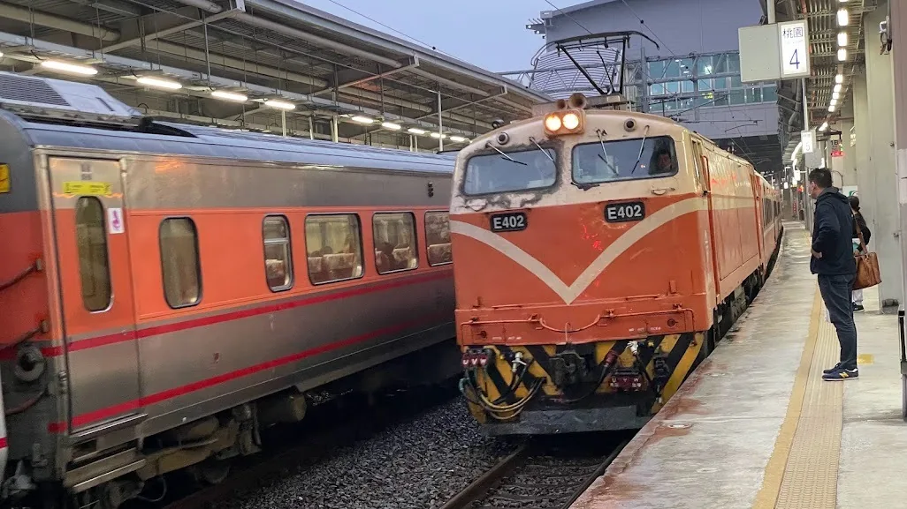
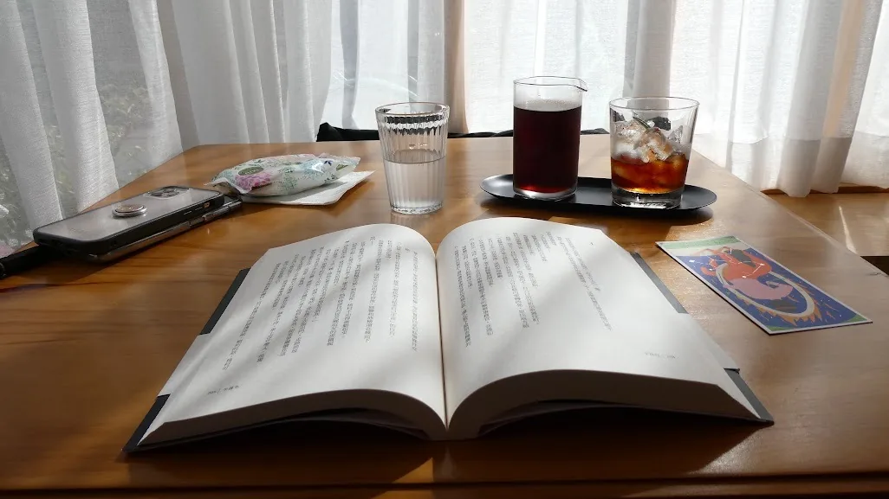
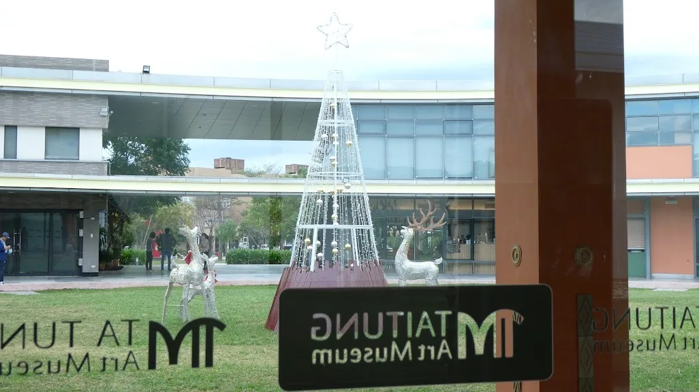
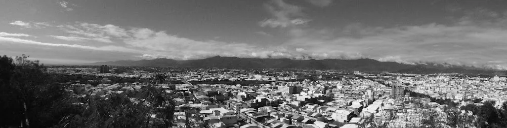
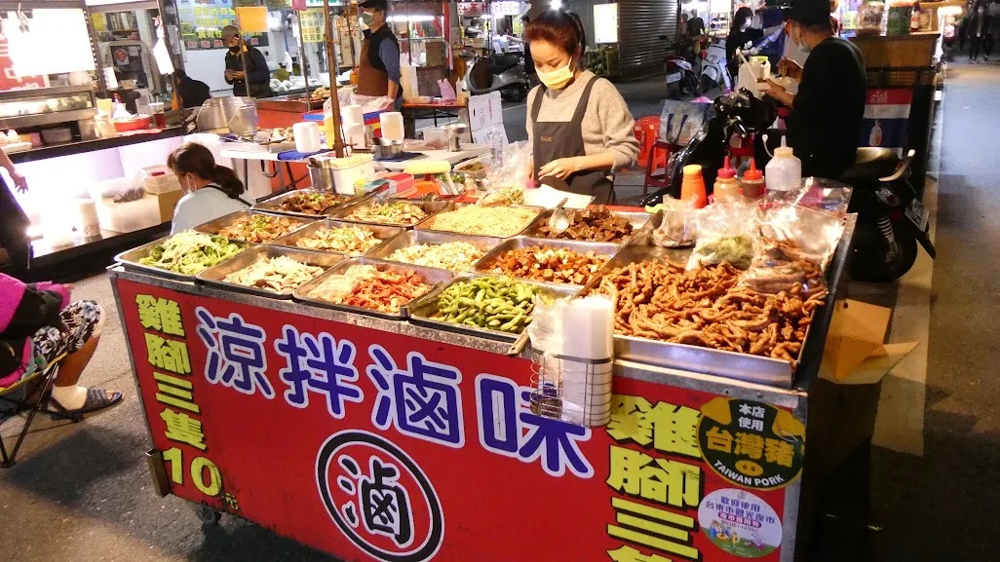
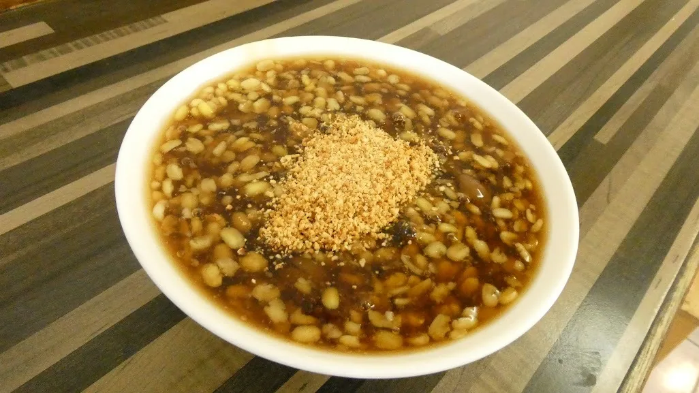
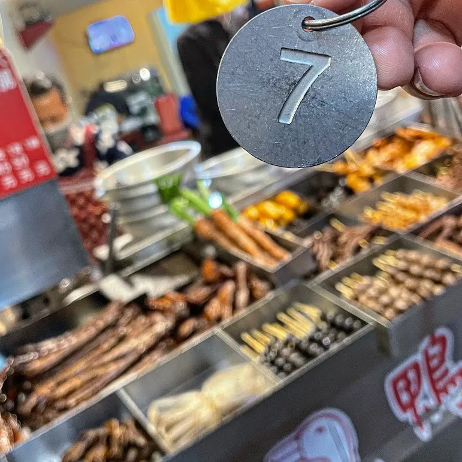
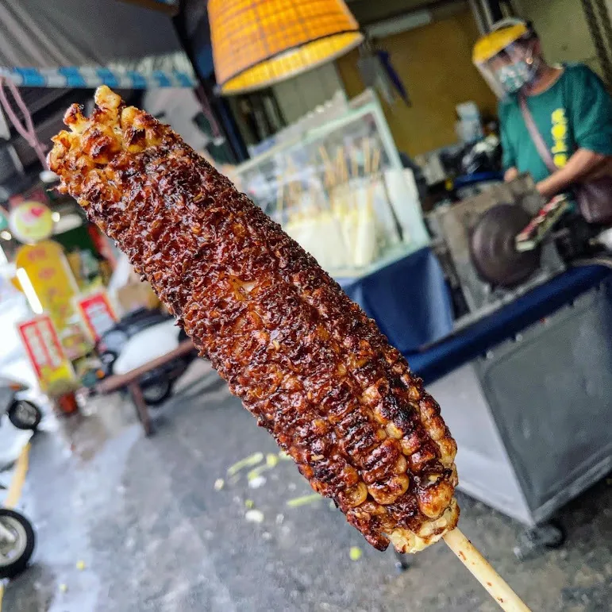
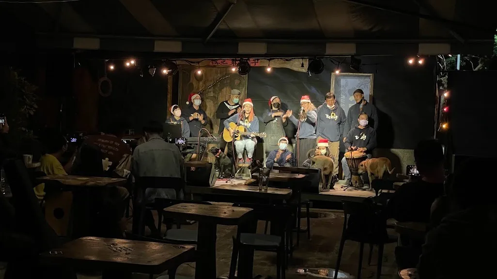
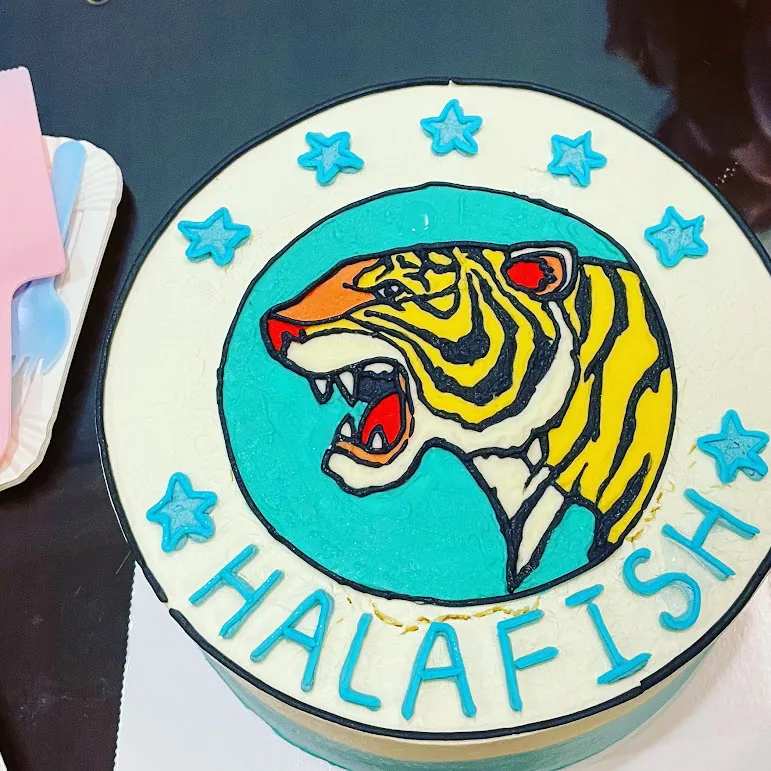

2021年的12月，一趟將近10個小時的車程。坐在速度宜人的莒光號上晃著，看著窗外的海線，心想這天氣就是該來海邊啊。

📌 **關於莒光號的慢活餘溫** 隨著台鐵車隊的世代交替，擁有橘色塗裝與手動摺疊門的舊型莒光號已陸續退役。那種獨特的牽引馬達低鳴與車廂搖晃節奏，是現代高鐵無法複製的時代體感。長途搭乘莒光號，與其說是通勤，更像是一場需要餘裕的鐵道儀式。
台東的天氣也是隨性。下大雨不撐傘，有外套一把罩就行。包車走海線，一路上有一搭沒一搭地吃著。更生路上的燒番麥麥麥，那焦糖化的醬香氣韻有夠迷人；接著是綠豆蒜、冷滷味米血，還有去嚐鮮的紹興炒飯——雖然好吃，但「愛心炒飯」還是贏了。

冬至這天明明有點熱，卻硬是需要吃冰的寶桑湯圓，果然我過著韓國冬至。
避暑時原本想去薄荷巴黎喝冷萃，結果週四公休來著，赫然發現今日二店也不開。後來鑽進了草月，一家貓貓狗狗友善咖啡。一開始走到隔壁還以為停業，原來那是烘豆區。是個讓人舒適的好空間，咖啡較淡，空調到位，日光無限。最逗的是保護色系列，我走過腳踏車才發現那裡有狗。
超詭異的，一打開黑幕籤，入眼的是這個。飛彈？台東美術館裡放戰鬥機？

去了台東天后宮，太歲求平安、文昌希順遂、月老心境寬，一次全包。
📌 **鐵花村的耶誕餘光** 滿掛彩繪熱氣球燈籠的鐵花村音樂聚落，曾是台東夜晚最溫暖的指引，也是在地文創與音樂人的搖籃。雖然鐵花村已於2023年底正式畫下休止符，但那裡的歌聲與點燈畫面，已成為無數旅人記憶裡無法抹滅的台東輪廓。






鐵花村員工大集合，Merry Christmas。看著這些幸運數字 Lucky 7 的旅程紀錄，想著上回見面，竟然是在台中老虎城 Gold Class 看《駭客任務：復活》。
「人間五十年，與天相比，如夢似幻，人生一度得生，入滅隨即當前。」 讀著橫山秀夫的半自白，看著那老人凹陷的雙頰。時間總是不等人的。

到了宜蘭，柯氏蔥油餅的隊伍依然是不負眾望的長。排隊達標的樂趣，就在一口咬下的那一刻，柯柯蔥。
回看當時短記
把這次回憶，接回2021年12月留下的幾個片刻。這些是當時的旅行與閱讀紀錄，店家資訊及營業狀態仍請以現況為準。